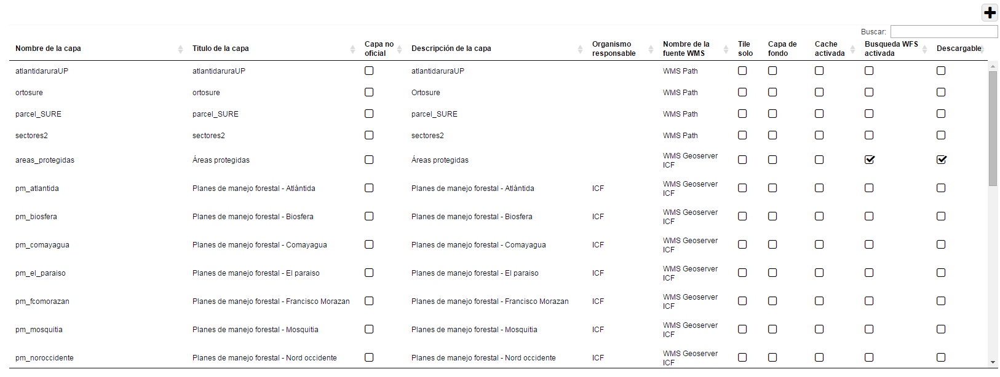
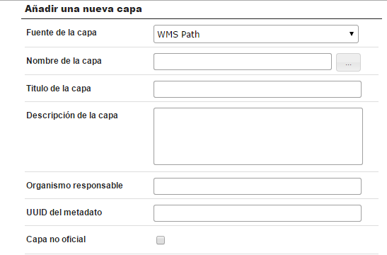
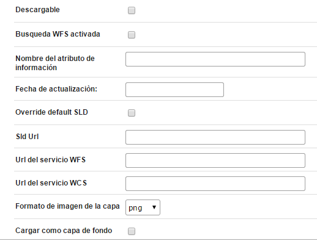
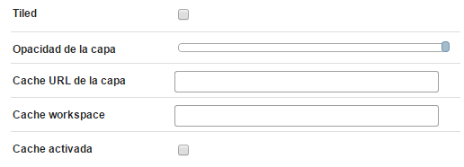
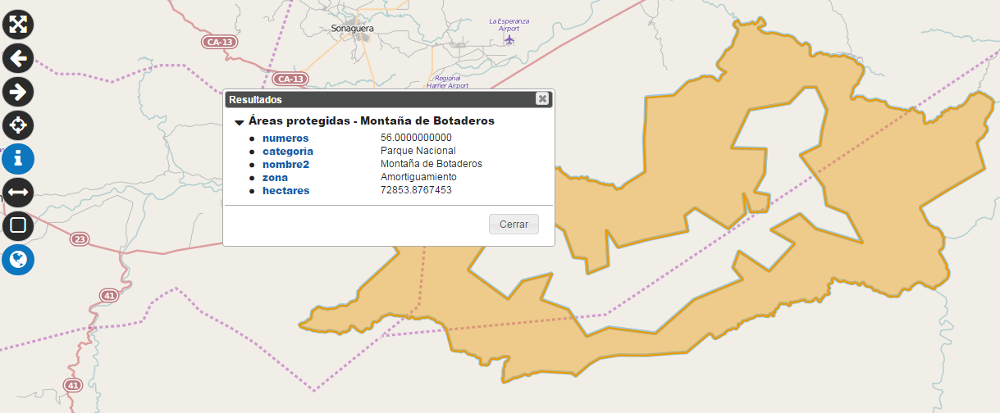
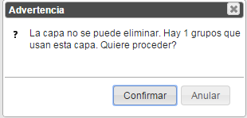

Permite configurar capas en el Geoportal a partir de las fuentes WMS configuradas previamente.
A través de una barra de herramientas, las capas se pueden Añadir, Eliminar o Modificar.

Pagina de configuraciòn de las capas
Permite al usuario configurar una nueva capa a traves de un panel

Añadir una nueva capa
Las informaciones de insertar en el panel son las siguientes:



Panel de informaciones para añadir una nueva capa
Aqui en seguida, los detalles de las informaciones
Fuente de la capa: la fuente WMS donde està publicada la capa.
Nombre de la capa: el nombre con el que la capa està publicada en la fuente de datos WMS.
Título de la capa: el nombre que la capa tinee en el Geoportal (Alias)
Descripción de la capa: proporciona una descripción detallada de la capa. Este campo se muestra en la ventana de detalle de las capas.
Organismo responsable: El nombre de la organización responsable del dato. Este campo se muestra en la ventana de detalle de las capas.
UUID del metadato: Si la capa tiene un metadato, y este metadato es publicado en el Geoportal, poner aquí el identificador univoco del metadato (UUID).
Capa no oficide Fuente Externa : Permite definir si la capa es oficial de ICF o no. A según del valor, la capa será mostrada en el Geoportal de colores diferentes.
Descargable: Permite especificar si la capa es descargable por el usuario o no. Como la descarga de las capas se realiza a través del servicio WFS, solo las capas vectoriales se pueden descargar. Las capas raster no son descargables y entonces esta opción tiene que ser deshabilitada para ellas.
Búsqueda WFS Activada: Define si los usuarios pueden hacer búsquedas sobre la capa. Como la búsqueda se realiza a través del servicio WFS, este servicio tiene que ser disponible en la fuente WMS.
Nombre del atributo de información: Permite especificar el nombre del atributo de la capa que el Geoportal utilizará como identificativo en la funcionalidad de interrogación de datos.

Nombre del atributo de informaciòn
Fecha de actualización: fecha en la que se actualizó el dato publicado. Este campo se muestra en la ventana de detalle de las capas.
Override default SLD y SLD URL: Estos campos permiten especificar la dirección de una hoja de estilo SLD que sobrescribe el estile con el que la capa es proporcionada por el servidor WMS. La dirección tiene que ser accesible desde el servidor donde se encuentra el Geoportal.
Url del servicio WFS: La dirección del servicio WFS que se utiliza para acceder a la capa. Este campo se muestra en la ventana de detalle de las capas.
Url del servicio WCS: La dirección del servicio WCS que se utiliza para acceder a la capa. Este campo se muestra en la ventana de detalle de las capas.
Formato de imagen de la capa: Permite elegir el formato que el Geoportal utilizará para acceder a la capa en el servidor cartográfico (fuente WMS)
Cargar como capa de fondo: Permite especificar si el Geoportal debe tratar la capa como capa de “fondo”.
Tiled: Define si el Geoportal va a acceder a la capa en el servidor cartográfico (fuente WMS) utilizando “tiles” o una sola imagen.
Opacidad de la capa: Permite definir el valor predefinido de opacidad para la capa
Cache URL de la capa: Si existe un servicio de cache que proporciona la capa en formato WMS, se puede poner aquí la dirección de este servicio.
Cache Workspace: Si el proveedor del servicio de cache necesita el nombre de un workspace para identificar la capa, poner aquí el nombre.
Cache activada: Especifica si el Geoportal tiene que utilizar la dirección WMS con cache de la capa en lugar de su dirección WMS sin cache.
Permite eliminar una capa.

Eliminar una capa
Si la capa es utilizada en un grupo del mapa (Ver la configuracion del mapa), un mensaje de adventencia pregunta al usuario si quiere proceder.

Mensaje de advertencia para la eliminaciòn
Una ventana permite al usuario modificar una capa existente.

Modificar una capa
La ventana es similar a la de inserción de una nueva capa.